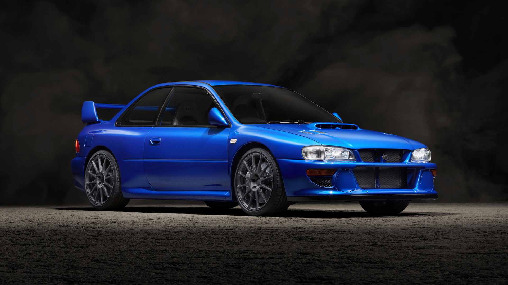
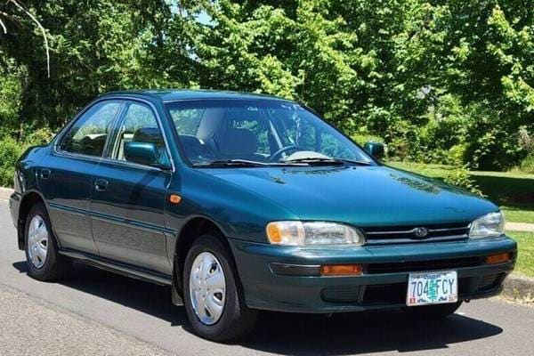
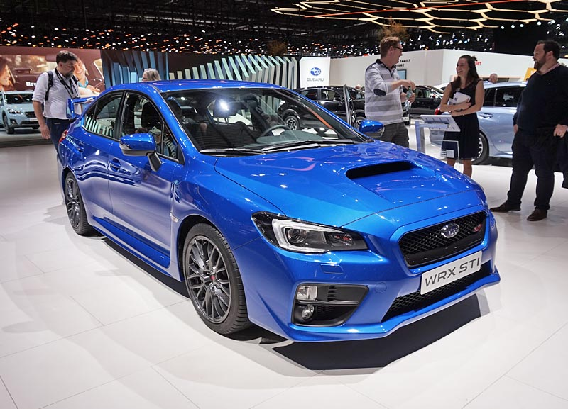

The Suburu WRX impreza (w.i.p)
Hello welcome, Today I will be discussing a great Japanese car called the Suburu WRX Impreza.
The Suburu Impreza is the successor of the Suburu Leone that introduced the EJ series engine to their line of vehicles. Suburu released six generations with 3 different types, the base model impreza which was an economy car, the WRX impreza which was performance orriented and the Impreza WRX STI which was high preformance. These cars are powered by flat four boxer engines in which both naturally aspirated and turbocharged configurations were offered. The Impreza which was available in all wheel drive or forward wheel drive, eventually gave birth to the WRX and the WRX STI after Suburu had success in off roading motorsports.
1st generation: Suburu Impreza(1993) offered LX, Gl and Sport trim levels and introduced the WRX that incuded rally features like stiffened suspension, forced induction and more.
Impreza
2nd generation Suburu Impreza which was larger compared to the 1st generation, introduced the WRX STI and was available in naturally aspirated and turbocharged variants.
Impreza WRX STI
5th generation Suburu which came in STi and WRX models but left the impreza's lineup. They are offered in two generations, the VA(2015-2021) and the VB(2021-present).
WRX STI
My name is Juan Garcia, I am 19 years old and I was born and raised in Van Nuys, California. Ever since I was younger I've always been interested in learning and messing around with technology. I started off programming by writing small scripts in video games and decided that I really enjoyed coding / problem solving, I also eventually found a love for c++ which is one of my favorite languages at the moment. Due to my interests I am currently enrolled in Los Angeles Valley College with my major being Information Technology, while learning more about computers and coding.
I am able to be contacted at 818-849-9158 Another method to contact me would be through my email at jgarciajr0029@gmail.com
Resource references: 2nd generation 5th generation